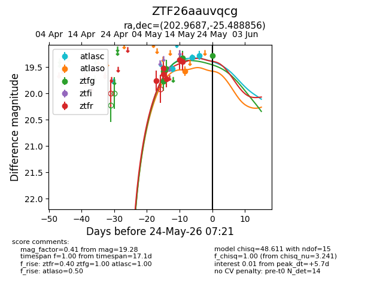
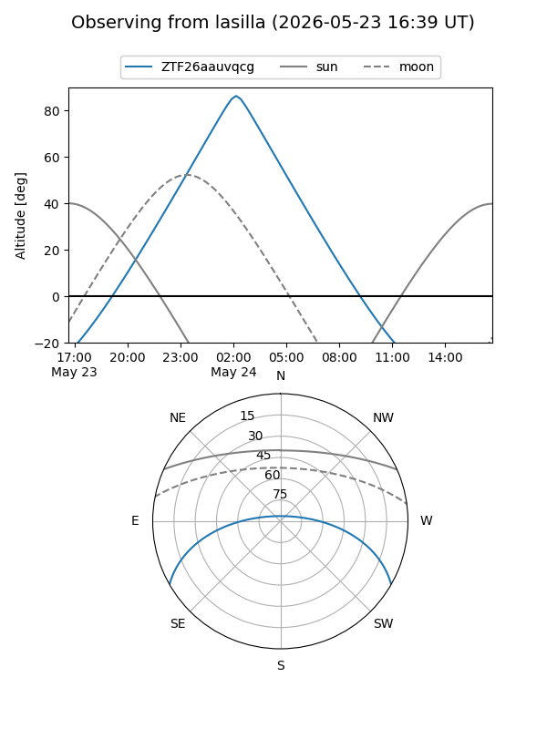
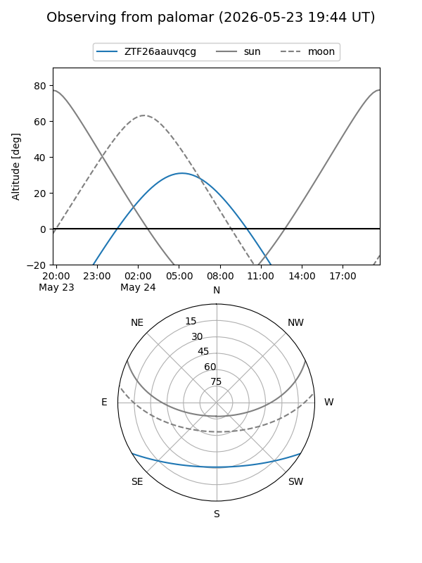
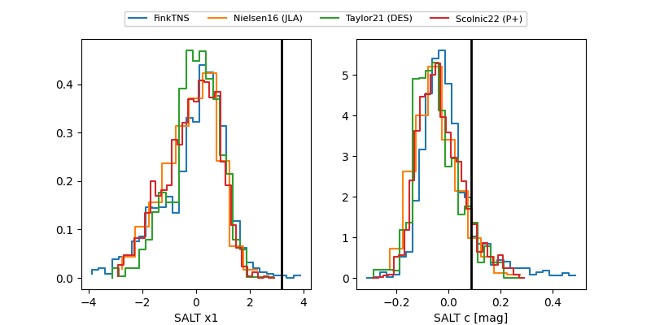

ZTF26aauvqcg
Target ZTF26aauvqcg at 2026-05-24 07:22
Aliases and brokers:
lsst-FINK: link
lsst-Lasair: link
lsst-ALeRCE: link
ztf-FINK: link
ztf-Lasair: link
ztf-ALeRCE: link
alt names
ZTF26aauvqcg (ztf,fink_ztf)
Coordinates:
equatorial (ra, dec) = 202.9687,-25.48886
equatorial (HMS+DMS) = 13:31:52.48,-25:29:19.88
galactic (l, b) = (314.2977,+36.48885)
Flags:
Photometry:
last atlasc=19.28, atlaso=19.57, ztfg=19.28, ztfr=19.39
4 atlasc, 1 atlaso, 5 ztfg, 6 ztfr detections
Lightcurve

Visibility


Additional plots
